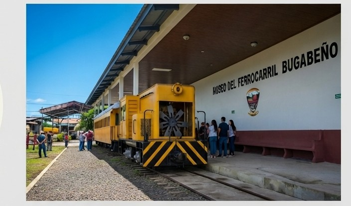
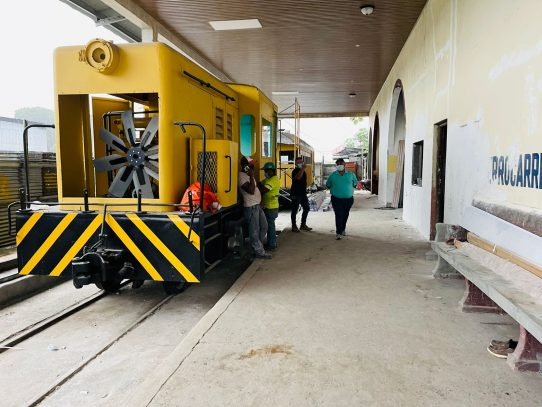
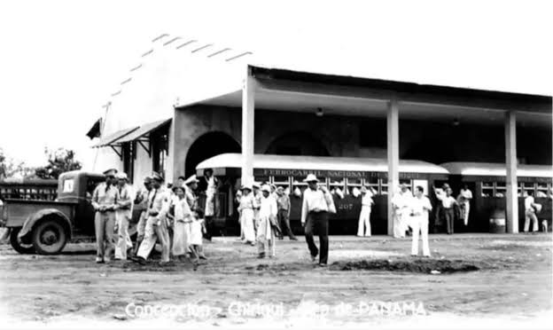
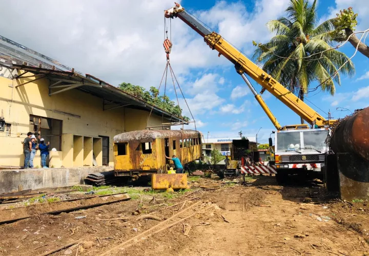
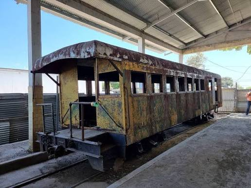
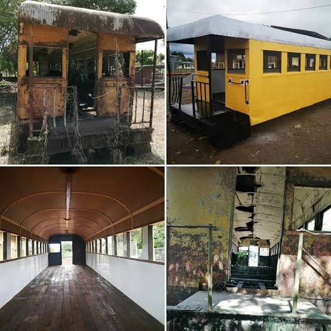

Recorrido 360°
Explora el entorno de la antigua estación en una vista panorámica envolvente.
Entrar al recorrido
Hay lugares que guardan historias. Descubre la antigua estación del ferrocarril de Bugaba a través de una experiencia que une patrimonio, tecnología y memoria.
Cuatro formas de recorrer el patrimonio ferroviario de Bugaba, cada una impulsada por una tecnología inmersiva distinta.
Explora el entorno de la antigua estación en una vista panorámica envolvente.
Entrar al recorridoObserva, rota y acerca un modelo tridimensional de la locomotora histórica.
Ver modelo 3DConoce el relato y la línea de tiempo del patrimonio ferroviario de Bugaba.
Leer la historiaUn archivo visual con imágenes de la estación y su entorno.
Ver galeríaMira a tu alrededor dentro de la antigua estación. Arrastra con el mouse, o mueve tu celular si tienes el giroscopio activado.
Cargando recorrido panorámico…
No se pudo cargar el video panorámico 360°.
Verifica que el archivo assets/360/estacion-360.mp4 exista y sea un video equirectangular 360°.
Observa la locomotora desde cualquier ángulo. Arrastra para rotar y usa la rueda del mouse o pellizca para acercar.
Cargando modelo 3D…
No se pudo cargar el modelo 3D de la locomotora.
Mostrando una representación de demostración mientras se incorpora el modelo definitivo en assets/models/locomotora.glb.

Un espacio editorial dedicado a la memoria ferroviaria de Bugaba.
El Ferrocarril Nacional de Chiriquí conectó por más de siete décadas a David, La Concepción, Boquete y Puerto Armuelles, impulsando el auge agrícola y comercial de la región. Tras su cierre, la antigua estación de Bugaba fue recuperada por el Municipio de Bugaba, con el apoyo del Ministerio de Cultura, para convertirse en el Museo del Ferrocarril Bugabeño: un espacio que hoy resguarda locomotoras, vagones, fotografías históricas y los testimonios de quienes vivieron la época del tren.
Fuentes: La Estrella de Panamá, Panamá América, Ministerio de Cultura de Panamá (MiCultura), TVN Panamá y El Siglo. Ver enlaces completos al final de esta sección.
La Asamblea Nacional autoriza el 28 de marzo de 1913 el contrato para construir el Ferrocarril Nacional de Chiriquí, pensado para conectar el distrito de Bugaba, una de las zonas más productivas del país.
Fuente: La Estrella de PanamáEl presidente Belisario Porras inaugura el Ferrocarril Nacional de Chiriquí, con una extensión total de 92.517 kilómetros, marcando el inicio de sus operaciones comerciales y de pasajeros.
Fuente: Panamá América, Ministerio de Cultura de PanamáEl ferrocarril se convierte en el eje de transporte de carga y pasajeros entre David, La Concepción, Boquete y Puerto Armuelles, impulsando el desarrollo agrícola y comercial de Chiriquí durante varias décadas.
Fuente: La Estrella de PanamáEl servicio de pasajeros se suspende hacia 1988 y, poco después, cesa también el transporte de carga. Las fuentes consultadas no coinciden en una fecha exacta de cierre definitivo: algunas ubican el fin de operaciones a inicios de los años 90, mientras que un estudio académico sitúa el cese formal en 1997.
Fuentes: Trenopedia; tesis de Daniel Samudio (UNACHI)La antigua estación de Bugaba es restaurada con fondos de descentralización del Municipio de Bugaba y el apoyo del Ministerio de Cultura (inversión superior a $287,000), dando lugar al Museo del Ferrocarril Bugabeño, dirigido por Samuel Samudio, que preserva vagones, locomotoras y la memoria viva de quienes trabajaron en el tren.
Fuentes: Panamá América, TVN Panamá, El SigloUn recorrido visual por la historia, la restauración y el presente del Museo del Ferrocarril Bugabeño.



